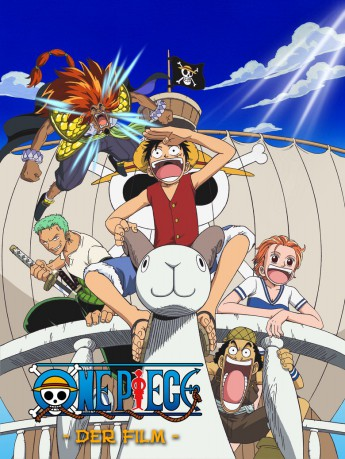

#6147 One Piece - Movie 03 - Chopper auf der Insel der seltsamen Tiere
 
 IMDB-Wertung: 6.7 / 10
IMDB-Wertung: 6.7 / 10  Metascore: 0
Metascore: 0 
Als die Mugiwara-Piraten auf der Going Merry die Insel Ōkan erreichen, wo ein legendärer Schatz verborgen sein soll, wird Chopper bei schwerem Seegang von Bord geworfen und wacht an Land in einer Gruppe von Tieren auf, die ihn als König der Tiere ansehen. Unter ihnen lebt ein Kind mit Namen Mobambi, mit dem er sich anfreundet. Seine Freunde von der Piratenbande begegnen nach einer unsanften Landung Heaby und Hotdog, die unter ihrem Anführer Butler ebenfalls nach dem Schatz suchen, der aus der Hornkrone des Kirin Lion besteht.
Jahr: 2002
Dauer: 55 Minuten
FSK:
Land: Japan Studio: Fuji Television NetworkTonspuren: DD2.0 - ,
Untertitel: Deutsch,
Auflösung: 1080p (1920x1080) Größe: 2498 MB
Genre: Action, Komödie, Abenteuer, Fantasy, Animation/Trick
Regisseur: Atsuji Shimizu
Drehbuch: David Caspe
Soundtrack:
Darsteller:
Datei: X:\Kinder Anime\One Piece\One Piece Movies\One Piece - Movie 03 - Chopper auf der Insel der seltsamen Tiere (2002, FSK, 1920x1080).mkv seit 09.05.2017
Festplatte: Kinder-Filme+Trick
 Es gibt insgesamt 19 Filme in der Gruppe 'Kinder Anime\One Piece\One Piece Movies'
Es gibt insgesamt 19 Filme in der Gruppe 'Kinder Anime\One Piece\One Piece Movies'